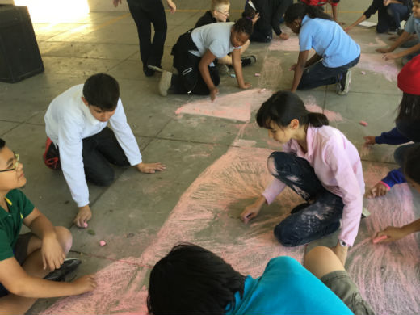
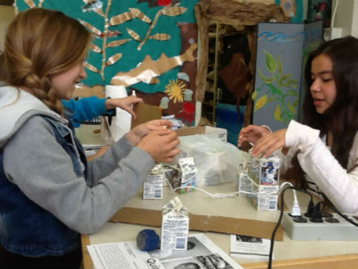

Students as creators of content
 Students come to school with a wealth of knowledge and experiences. In order to maximize their time and school as well as their academic and artistic potential, this should be used. Makers takes advantage of these as students use what they know to create thought porovoking content that will inform the learning of other students.
Making has been recently associated with the academic subjects of math and science. In order to connect this type of thinking across the curriculum, our classes are extending Making principles into social studies. Many Social studies educators have been attempting to transition social studies to social science. The Makers Movement is the vehicle to accomplish this.